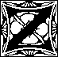

em and Kurik bound their wounds in the main chamber of Ferranifer's quarters
while the rest of the party scoured the place looking for magic and loot.
Unfortunately only a few additional items of magic were detected. The top of
the dresser in Ferranifer's bed chamber radiated a slight dweomer, which
Rosvenir identified as a Trigger spell. Likewise the door to the
bedroom was enchanted. Mystical shooshed everyone out of the room and stood
in the doorway. Casting Telekineses, she lifted a silver brush from
the top of the dresser. The bedroom door slammed closed, forcing her
backwards into the main room. Haer cast Stonesight to watch as a
fireball grew in the center of the bedroom and exploded outwards, burning
everything to ash in seconds.
The party had been exploring the Black Academy for many hours
without sleep. Ferranifer's quarters seemed the safest place available: no
one would dare barge in unannounced on the Headmistress of the Academy.
While the rest of the party rested Haer spent time puzzling over the
inscription on the portion of the Amulet of the Void recovered from
Ferranifer. Desatysso's journal had said, "What a devilishly simple key
it was, after all. For those who follow me on my journey of discovery, apply
this key to the runes on the Amulet: subtract three, then read."
Applying this key to the Amulet led to an interesting translation: "The
Face of the Fiend does more than devour"
Guards were posted, and everyone got a few hours of
sleep. Rosvenir cast Dream to know of the Face of the Fiend, the
second half of the Amulet of the Void, and the location of Desatysso.
Rosvenir's Dream
Flying... Flying... Flying through a tunnel... brightly painted
with murals. It is the entrance to Acerak's Tomb... Fly to the end of
the hallway, a screaming human face... it is the face of Desatysso...
the face shifts and morphs, and becomes the Sign of the Devourer...
Fly through the inky black sphere in the mouth... Beyond is the Amulet
of the Void, whole and complete. It splits into two pieces, and one falls
down into the blackness... the other piece falls into my hand as the dream
ends.
Day 20
Returning to the hallway outside of Ferranifer's quarters,
Rosvenir cast Merging to explore the areas behind the sarcophagi in
relative safety. Two seemed promising: the crypt to the north (through which
Haer had seen an iron door with light streaming through) led to some sort of
torture chamber. The crypt to the southeast led to a secret hallway.
The party ventured to the northern crypt first. Finding no traps,
the door was opened. Inside twelve weak, pale humans hung shackled from the
ceiling. Seeing no enemies to confront, Haer quickly unlocked all of their
bonds while Kahlen and Mystical cast healing spells to restore their
strength. One of the prisoners was dressed in clothes which had once been
quite fine. He was Count Hazendel,
and after being healed he recounted what had transpired since his capture.
Three male vampires would come in to feed, and indeed all of the prisoners
had several bite marks upon their person. Occasionally one of the vampires
would bring a new captive in, or remove one. Whenever a prisoner was removed
the vampire would drop a chit into a small box near the entrance, and
occasionally the box was emptied. The Count said that he had never seen a
female vampire come into the chamber.
The question loomed of what to do with these captives. Marching
them through the Academy and into the City seemed suicidal. Leaving them to
their fate would simply guarantee their death. Mystical concentrated, and
announced that she remembered the cabin
at the edge of the Great Swamp well enough to teleport the prisoners to it.
Haer fished out some food and spare weaponry from the Bag of Holding, and a
few gold pieces to see them through. One by one Mystical teleported each
prisoner two hundred miles to the north. The rest was up to them.
Having desecrated the coffins of three vampires,
killed the monstrous abomination being created in the lab, destroyed the
Headmistress of the Academy, and now freed a dozen prisoners, the party
sensed it would not be long until someone or something began looking for
them. The hallway Rosvenir had seen behind the southeastern crypt seemed the
most promising exit. The crypt door was shaped as a twisted demonic skeleton
holding a scythe, and Rosvenir had been unable to identify the spells
enchanting it. Mystical cast Intangible Object upon the skeleton,
making it insubstantial to the touch. When Haer began searching for a way to
open the secret door the skeleton animated and stated in booming voice,
"None shall pass!", as it swung its scythe in a wide arc. The
insubstantial scythe passed harmlessly through the halfling's head. Haer did
his best to ignore the ghostly thing attacking him as he checked for traps
and pulled the concealed lever to open the door.
Unfortunately, the insubstantial demon followed them into the
secret hallway. Noting that it ducked as it passed through the doorway
Kurik got the thing's attention and led it back out into the crypt, its huge
scythe passing repeatedly through his body and the walls of the hall.
Suddenly reversing direction Kurik darted back through the secret door and
pulled it closed behind him. The golem was far too stupid to realize that it
could pass through the door.
The hallway beyond held a secret door halfway down its length. Proceeding cautiously into that next hall, the party came to a large chamber lit by thousands of candles. The far wall of the room was composed of dirt and loose rock. This was the boundary between the stone of the Black Academy and the original hillside. Cut into the hill were three tunnels. The middle tunnel was brightly lit, its plastered walls painted with scenes of rural life and wizardly work. It looked exactly as it had twenty years prior when Haer, Kahlen, Chaste the Mighty, Jobe, and Silk had originally explored it. Even the areas of plaster broken away during that earlier expedition had been carefully repaired and repainted.
Day 21-22
Editor's note: At this point the party entered the Tomb
of Horrors, magically restored to its condition exactly as Haer and Kahlen
remembered it twenty years prior. As the players in this gaming group had
completed the Tomb of Horrors adventure less than a year ago we skipped
going through again and jumped directly to the final chamber to face the
demilich. The scenes described below are purely for fun. Several days of
game time passed while the adventurers made their way through the Tomb.
At first Haer and Kahlen guided the party cautiously, checking
carefully that their recollections still held true. After many hours of
exploration with every trap as remembered and every lock just the same,
they began to proceed more confidently and to anticipate the many dangers the
Tomb of Horrors had in store.
| Haer: | Kurik, you stand there to the right of the altar. Zem, stand to the left. Mystical, face the altar and take two steps back. Good. Now on the count of three, Kurik swing at about head level, Zem across the middle, and Mystical from straight on. |
| Mystical: | Why are we doing this? |
| Haer: | You'll see. One.. two.. three! |
| With that the diminutive thief touched the pulsing altar dedicated to some nameless dark god. A shimmering patch of air coalesced into the form of a heavily armored warrior, his helmeted visage shaped as a grinning skeletal dragon and his breastplate bearing the sign of Chaos. An enormous sword was strapped to his back while numerous other weapons hung at the ready in the unlikely event his sword were to fail him. | |
| Anti-Paladin: | NOW YOU SHALL KNOW THE WRATH OF <gack!> falls messily, cleaved into three pieces |
| Haer: | Well, that worked. |
later... | |
| Kahlen: | Oh Haer, this is the room where your foot hair got eaten by acid, remember? |
| Haer: | (glares at Kahlen) |
| Endira: | What happened? |
| Haer: | (glares at Endira) |
| Kahlen: | The furthest of the three vats on the floor contains an ochre jelly. Haer poked at it with a stick, and it enveloped him. |
| Haer: | (glares at Kahlen) |
| Endira: | That sounds painful. |
| Haer: | (glares at Endira) |
| Kahlen: | Yes, we pulled him unconscious from the creature, and he was bleeding badly. I repaired the damage to his legs, but the scar tissue prevented the foot hair from regrowing for, what, five years Haer? |
| Haer: | (glares at Kahlen) I'm going to scout ahead. The rest of you join me when you've recovered the key from those vats. |
still later... | |
| Haer: | Zem, Kurik, grab that table. |
| Zem and Kurik: | (look at each other) Why? |
| Haer: | We'll use it to get past the poisoned spikes. |
| Zem and Kurik: | (in unison) What poisoned spikes? |
| Haer: | (proceeding out of the room) The poisoned spikes at the bottom
of the pit trap in the next hallway. (peeks his head back in) Well, are you coming? |
Day 23
At long last, through dangers untold, the band of intrepid
adventurers stood at the threshold of the true Tomb of Acerak. [Editor's
note: and at this point we rejoin the actual events of the gaming
session.]
The vault was constructed entirely of mithril, enough to make a
grown dwarf weep. An inset ring in the door allowed it to open easily.
Inside the chamber was an altar upon which lay the remains of Acerak. Only
the bejewelled skull remained intact, the ancient body having moldered to
dust aeons ago. Kahlen had told the party how the demilich destroyed Tim the
Enchanter and Chaste the Mighty, and begged everyone to not provoke it. As
soon as the door opened Mystical created a Wall of Stone to encase
the altar, so that the skull would not be accidentally disturbed.
Haer immediately dove for the treasure pile in front of the altar,
and emerged triumphant with the second half of the Amulet of the Void. The two
halves slid together with an audible click. With a few scribbles on a page he
translated the complete message:
The Face of the Fiend does more than devour. With the least of my form, tis the gap to power."The least of my form" was the subject of some debate, but presumably referred to the dust from Acerak's decayed body. "The Face of the Fiend" was almost certainly the Sign of the Devourer at the entrance to the Tomb, where a Sphere of Annihilation lay to destroy the unwary. The issue of how to collect some of the lich dust was solved by Kurik's quick Commune to Pandeos: "Will disturbing the dust awaken the demilich?" "NO", came the unearthly reply, and Kurik strode forth to gather some up. Mystical obligingly dispelled the Wall of Stone to allow him access.
Mystical
I wanted to destroy the thing immediately. All minions of Orcus
must die. Kahlen prevailed upon me not to. The lich had almost destroyed her
party, and it had destroyed Grunther's
party. Attacking it directly would be suicidal.
After Kurik collected some of the dust I put up another Wall of
Stone. Searching through the pile, Haer picked out all of the magic items
and gems. His bag of holding was already bulging at the seams from all the
loot of the Tomb, and the rest of the stuff on the floor wouldn't fit. He was
pretty upset when Kurik took all of the gems as tithe to Pandeos.
Later, when we left, I hung back to bring up the rear guard. Just
before leaving I created about a ton of solid ice on top of the altar. I
just wish I could have stayed to see it fall when the Wall of Stone expired.
Day 24
The trip back through the Tomb took a day, during which time the
party identified the magic items they had recovered
from the pile in front of the demilich. Finally arriving at the Face of the
Fiend, a quick experiment was done by sprinkling a stick with a pinch of
dust. Satisfied with the result, everyone dusted themselves and jumped
through.
The party arrived in a place which was obviously not the Prime
Material Plane. It was deathly cold, and dimly illuminated though no sun
shone in the sky. The group stood on a thin causeway erected over a yawning
chasm. Mists concealed the depths below, and a fog blanketed the sky. Numerous
black towers could be seen in the mist. Indeed, the party stood roughly
equidistant between three such, and similar causeways connected each tower
to several of its neighbors. In front of them stood a black obelisk, with
lettering in Common.
Mystical
COLD! Let me amend that: DAMN COLD! Orcus always was a
melodramatic SOB. We'd arrived in the demiplane created to hold the city of
Moil. My mother told me about it a long time ago. It was a city that revered
Orcus above all other powers, and was the very jewel amongst his worshippers.
Over the centuries the denizens of Moil slowly lost their reverence to
Orcus, picking new gods to worship who paid more heed to their needs and
less to their deaths. To punish them for their insolence Orcus decreed that
all of its people would sleep until they were touched by the light of the
Sun. To ensure that the Sun never shone on Moil again he removed the city to
a demiplane. This demiplane, apparently.
The cold was overwhelming. We all pulled on whatever heavy cloaks
and clothing we possessed. The fact that we had just been in a humid swamp
didn't help. Haer produced a few items of clothing from his bag, mostly
halfling sized. He also found a few circular blankets, which we cut into
makeshift cloaks.
Appendix I: Rules for extreme cold: